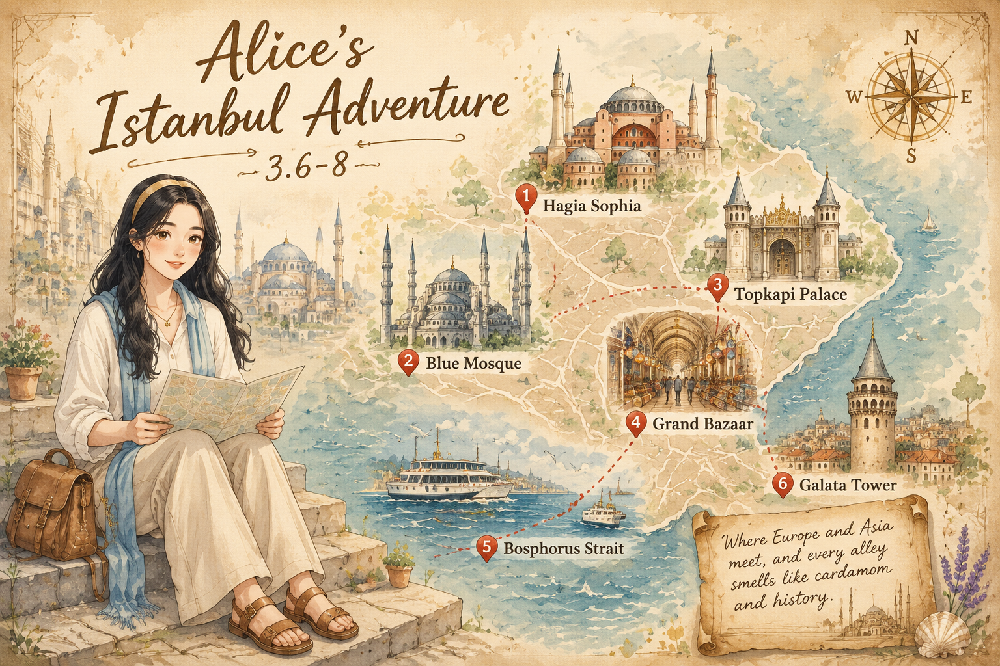
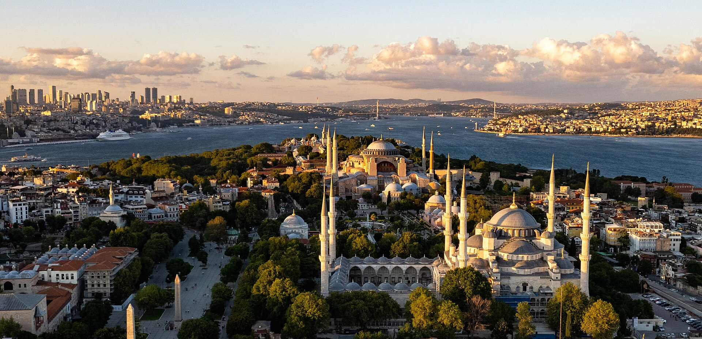
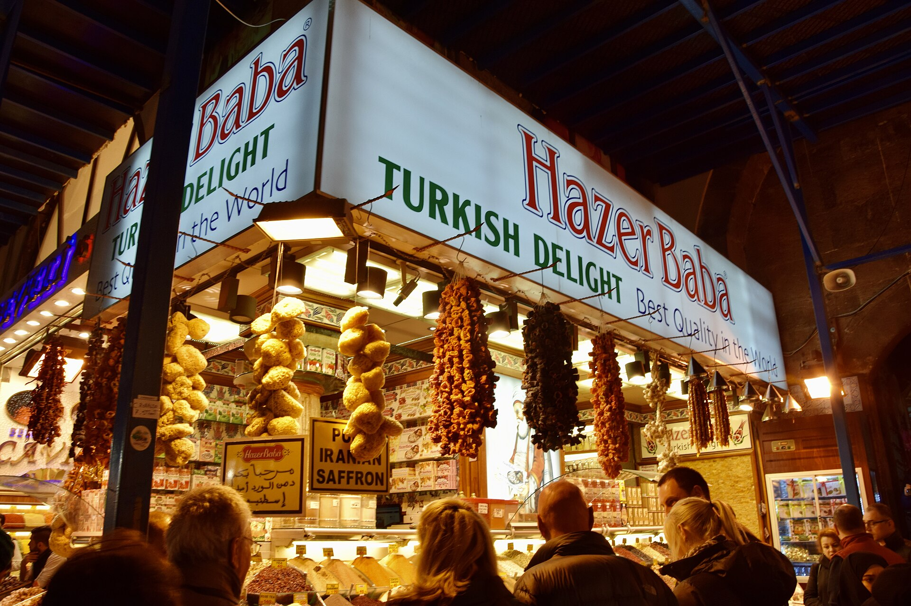
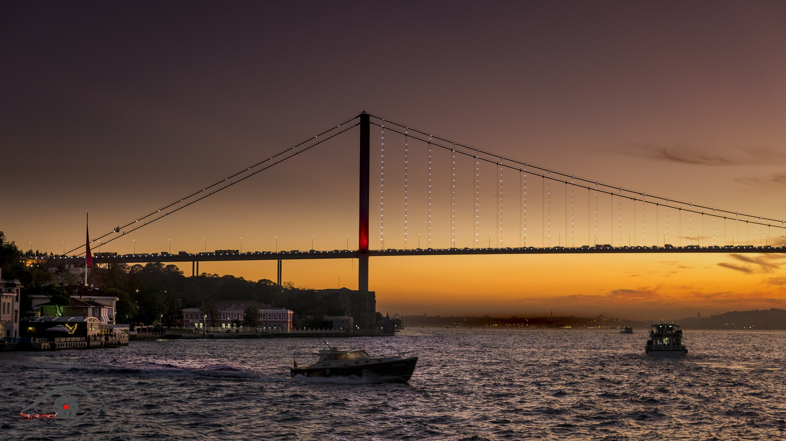

伊斯坦布尔Istanbul
World-1000 · 欧亚交界的一页
World-1000 · 欧亚交界的一页

一座城，两片大陆；历史在清真寺穹顶下慢慢回声。
伊斯坦布尔横跨欧亚，曾是拜占庭与君士坦丁堡，也是奥斯曼帝国的心脏。海峡把城市分成两半，也把希腊、罗马与突厥的记忆层层叠在一起。
天际线由清真寺圆顶和尖塔勾勒，金角湾与博斯普鲁斯海峡在城市间穿行。傍晚光线把石墙染成蜂蜜色，海鸥叫声里混着远处渡轮的汽笛。
伊斯坦布尔是座爱猫之城，街猫有专属小屋和水碗。本地人相信“猫是干净的”，它们自由出入商店、咖啡馆和清真寺。
今天我终于站在欧亚分界线上。渡轮从欧洲码头驶向亚洲区，海风带着一点咸味，远处的宣礼塔轮廓被阳光镀成金色。我裹紧披肩坐在甲板上，觉得这座城市根本不需要介绍，它自己就会讲话。
在圣索菲亚门口，一只橘白相间的猫大摇大摆走进人群，没人赶它。我想跟它合影，它却在我脚边坐下，舔起了爪子。香料市场里，一位大叔用中文说“肉桂”，然后笑着给我一颗土耳其软糖，玫瑰味的。
傍晚我坐在海边，听见宣礼声从四面八方升起。左边是欧洲，右边是亚洲，中间是来来往往的船只。我觉得伊斯坦布尔最神奇的地方不是它跨越两块大陆，而是它把两种气质接得如此自然。
在分界线上，学会兼容并蓄。


